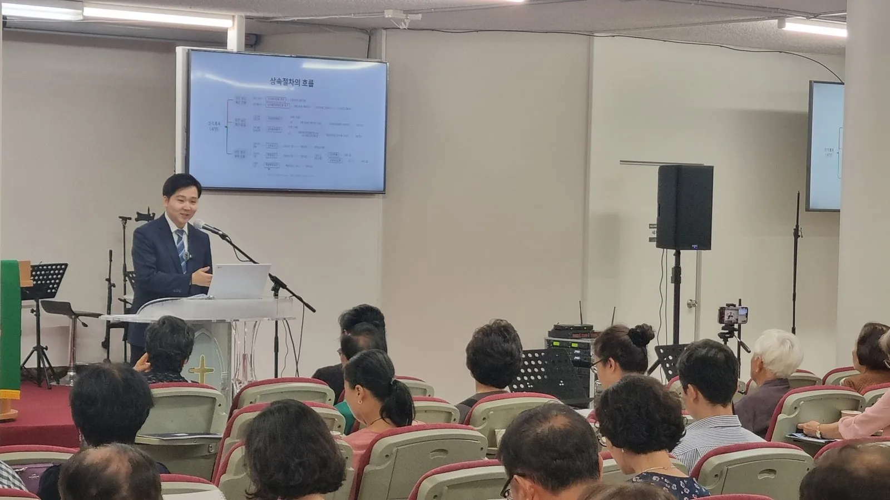
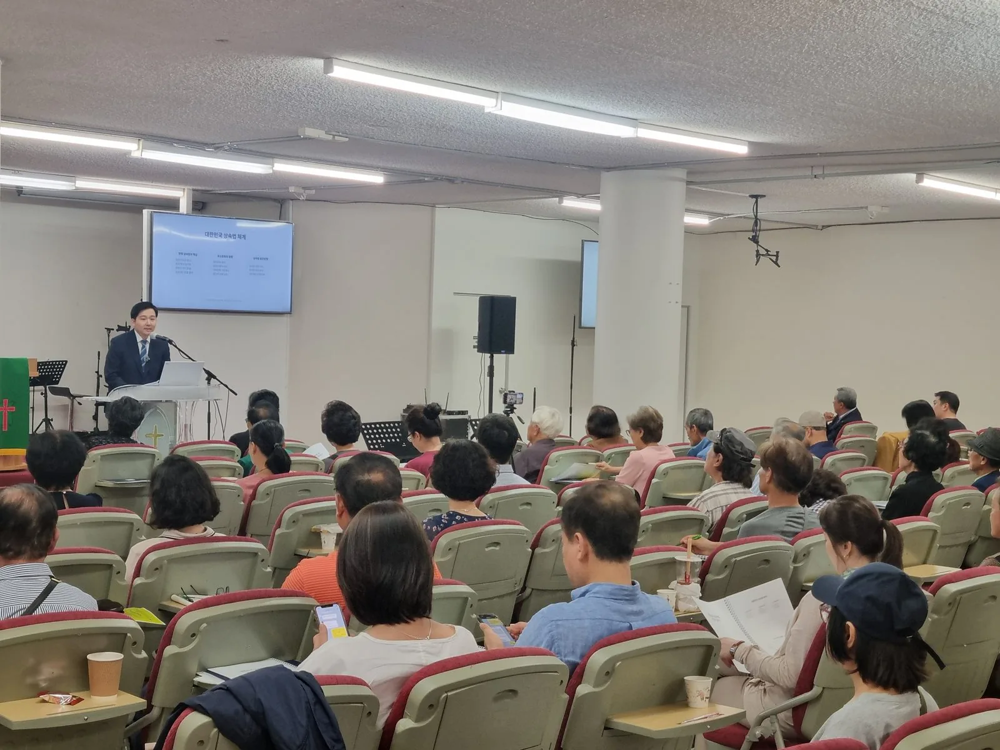
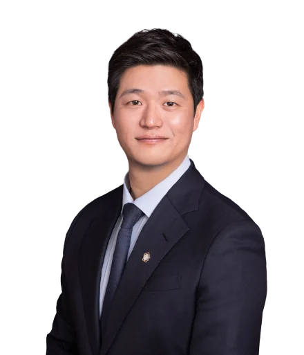
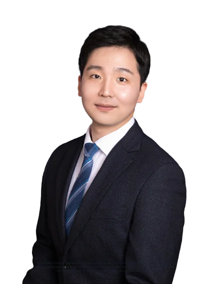

호주에 계셔도 한국의 재산과 신분에는 한국법이 적용됩니다.
기한은 사정을 봐주지 않고 흘러갑니다.
시드니한인회, 호주한인상공회의소, 호주한인복지회와 업무협약을 맺었습니다.
단체가 교민께 소개하기에 앞서 저희를 살펴본 결과입니다.

시드니에서 두 차례 설명회를 열었고, 약 80분께서 자리를 채워 주셨습니다.
준비한 순서가 끝난 뒤에도 질문은 한참 이어졌습니다.
서류가 어디에서 번번이 반려되는지, 형제분들과 어떤 말이 오가고 있는지, 무엇부터 물어야 할지조차 막막하다는 말씀까지 그 자리에서 들었습니다.
이 페이지에 적힌 내용은 그날 나온 이야기들입니다.
호주에 계신 분들이 한국에 남겨두신 문제는 대개 네 가지로 모입니다.
해당하는 항목을 누르시면 자세한 내용이 열립니다.
부모님께서 한국에 재산이나 채무를 남기셨습니다.
상속포기 3개월 · 상속세 9개월 · 유류분 1년호주에서 태어났거나 어릴 때 건너온 자녀가 복수국적자입니다.
만 18세가 되는 해 · 생일이 아니라 연도로 정해집니다한국 업체와 거래하다 대금을 받지 못하셨거나, 보낸 대금만큼 물건을 받지 못하셨습니다.
재산이 빠져나가기 전에 묶는 일이 먼저입니다한국에 집이나 땅을 두고 오셨습니다.
오래 둘수록 정리 비용과 위험이 함께 불어납니다아래는 한 번 지나면 되돌릴 수 없는 기한입니다.
서류를 갖추는 데만 몇 주가 걸립니다. 남은 기간이 얼마인지부터 확인해 보시기 바랍니다.
해외에 계신 분들이 실제로 부딪혔던 지점과, 그것을 풀어 간 방법입니다.
아직 진행 중인 사건도 함께 실었습니다.
호주에 거주하시던 분이 한국의 시중은행에 예금을 남기고 돌아가셨습니다. 배우자께서 예금을 찾으시려고 한국 은행을 두 차례 방문하셨습니다.
은행은 지급을 거절했습니다. 고인이 호주 시민권자이니 한국법이 아니라 호주법에 따라 상속인임을 증명하라는 것이었습니다.
그 뒤 은행은 예금 전액을 법원에 공탁했습니다. 유족이 공탁금 지급을 청구했으나, 이번에는 법원이 받아들이지 않았습니다.
공탁관에게는 호주 상속법을 심사할 권한이 없으니, 지급을 원한다면 판결로 상속인임을 확정받아 오라는 취지였습니다.공탁관 불수리 결정 취지
은행도 법원 창구도 판단을 미루는 상태였습니다. 호주 상속법을 한국 법정에서 증명하지 않는 한, 예금을 찾을 길이 없었습니다.
현재창구에서 거듭 거절되던 사안을, 입국 없이 상속인 지위를 판결로 확정받는 절차로 옮겨 소송을 진행하고 있습니다.
호주에서 사업을 하시는 교민께서 한국의 제조 공장에 물품 대금을 먼저 보내셨습니다. 납기가 지나도 물건은 오지 않았고, 공장 측은 연락을 끊었습니다.
현지 경찰에 신고해도 한국에 있는 법인의 계좌에는 손을 댈 수 없었습니다. 그사이 상대방이 재산을 옮겨 두면, 뒤늦게 판결을 받아도 돌려받을 것이 남지 않습니다.
현재호주에서는 손쓸 수 없던 상대방의 한국 내 재산을 대상으로 보전 절차를 밟고 있습니다.
한국에 계시던 아버지께서 채무를 남기고 돌아가셨습니다. 자녀 세 분은 모두 해외에 계셨습니다.
빚이 넘어오는 것을 막으려면 상속포기를 해야 하고, 이는 상속이 개시된 사실을 안 날부터 3개월 안에 마쳐야 합니다. 그런데 인감, 기본증명서, 위임장 같은 관공서 서류를 해외에서 기한 안에 갖추는 일은 대리인 없이는 쉽지 않습니다.
결과세 분 모두 입국하지 않으시고 3개월 기한 안에 상속포기를 마치셨습니다.
진행 중으로 표시된 사건은 아직 종결되지 않았으며, 적힌 내용은 현재까지의 경과일 뿐 결과가 확정된 것이 아닙니다. 위 내용은 실제 수임 사건을 의뢰인이 특정되지 않도록 각색했습니다. 개별 사건은 사실관계와 증거에 따라 결론이 달라지며, 같은 결과를 보장하지 않습니다.
어디까지 맡기실 수 있는지 먼저 확인해 보시기 바랍니다.
상담은 카카오톡 보이스톡과 페이스톡, Zoom, Google Meet 가운데 편하신 방법으로 하시면 됩니다.
일정은 호주 시간에 맞춰 잡아 드립니다.
궁금한 항목을 누르시면 답변이 열립니다.
처음 상담부터 마무리까지 소속 변호사가 직접 맡습니다.


호주 현지에서 설명회를 두 차례 열었고, 호주에 거주하시는 의뢰인의 사건을 맡아 왔습니다.
부모님께서 아직 건강하시고 지금은 아무 일이 없더라도,
알고 계시는 것과 모르고 계시는 것의 차이는 나중에 드러납니다.